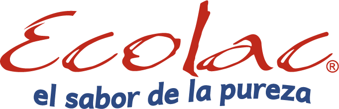

<!DOCTYPE html>
<html>
  <head>
    <meta charset="UTF-8"/>
    <meta name="viewport" content="width=device-width, initial-scale=1.0"/>
    <meta http-equiv="X-UA-Compatible" content="ie+edge"/>
    <link rel="stylesheet" href="https://use.fontawesome.com/releases/v5.5.0/css/all.css" integrity="sha384-B4dIYHKNBt8Bc12p+WXckhzcICo0wtJAoU8YZTY5qE0Id1GSseTk6S+L3BlXeVIU" crossorigin="anonymous"/>
    <link rel="stylesheet" href="../css/bulma.min.css"/>
    <link rel="stylesheet" href="../css/ext/bulma-carousel.min.css"/>
    <link rel="stylesheet" href="../css/stylesheet.css"/>
    <title>ECOLAC</title>
  </head>
  <body></body>
</html>
<header>
  <section class="hero is-light">
    <div class="hero-body rest-pad-y">
      <div class="container">
        <div class="title has-text-centered cont-image"></div>
      </div>
    </div>
  </section>
</header>
<nav class="navbar is-info nav-sticky nav-color" role="navigation" aria-label="main navigation">
  <div class="navbar-brand"><a class="navbar-item is-hidden-desktop" href="../index.html"></a><a class="navbar-burger burger" role="button" aria-label="menu" aria-expanded="false" data-target="navbarBasicExample"><span aria-hidden="true"></span><span aria-hidden="true"></span><span aria-hidden="true"></span></a></div>
  <div class="navbar-menu" id="navbar-main">
    <div class="container navbar-start centrado"><a class="navbar-item has-text-weight-semibold" href="../index.html">Inicio</a><a class="navbar-item has-text-weight-semibold" href="../views/quienes_somos.html">Quiénes somos</a><a class="navbar-item has-text-weight-semibold" href="../views/productos.html">Productos</a><a class="navbar-item has-text-weight-semibold">Valor compartido</a><a class="navbar-item has-text-weight-semibold" href="../views/contactos.html">Contáctos</a></div>
  </div>
</nav>
<main class="container py-2">
  <section class="section">
    <div class="columns">
      <div class="column is-two-fifths">
        <aside class="menu">
          <ul class="menu-list align-btn">
            <li class="btn-width"><a class="button is-link is-outlined is-medium" href="./quienes_somos.html">Quienes somos</a></li>
            <li class="btn-width"> <a class="button is-link is-outlined is-medium" href="#mision">Mision</a></li>
            <li class="btn-width"> <a class="button is-link is-outlined is-medium" href="#vision">Vision</a></li>
            <li class="btn-width"> <a class="button is-link is-outlined is-medium" href="#valores">Valores</a></li>
            <li class="btn-width"><a class="button is-link is-outlined is-medium" href="#politica">Politica empresarial</a></li>
          </ul>
        </aside>
      </div>
      <div class="column"> 
        <div class="content">
          <div class="level-rigth"> 
            <div class="card" id="mision">
              <div class="card-content">
                <div class="media">
                  <div class="media-left"></div>
                  <div class="media-content">
                    <p class="title is-4">Mision</p>
                  </div>
                </div>
                <div class="content has-text-justified">
                  Ser en el 2017 una empresa líder en el mercado de la región sur del país, 
                  en la producción y comercialización de productos lácteos y alimentos, 
                  de apoyo a emprendedores y estudiantes de la UTPL; construida en sus propias instalaciones, 
                  con moderna tecnología, que garantice productos de calidad e inocuos, 
                  con colaboradores comprometidos, con sentido social y cuidado del medio ambiente. 
                </div>
              </div>
            </div>
            <div class="card" id="vision">
              <div class="card-content">
                <div class="media">
                  <div class="media-left"> </div>
                  <div class="media-content">
                    <p class="title is-4">Vision</p>
                  </div>
                </div>
                <div class="content has-text-justified">
                   Somos una empresa de tradición en el mercado local y en constante crecimiento,
                  que brinda sus instalaciones a estudiantes y emprendedores de la UTPL, 
                  elaborando variedad de productos lácteos inocuos y de calidad, 
                  con permanente innovación de su maquinaria y capacitación continua de su personal humano, 
                  comprometidos con el desarrollo agroindustrial de la región sur del país, la sociedad 
                  y el medio ambiente.         
                </div>
              </div>
            </div>
            <div class="card" id="valores">
              <div class="card-content">
                <div class="media">
                  <div class="media-left"></div>
                  <div class="media-content">
                    <p class="title is-4">Valores</p>
                  </div>
                </div>
                <div class="content has-text-justified">
                  Calidad: En la elaboración de productos inocuos en base a un sistema de aseguramiento de Calidad.
                  Compromiso: Personal humano comprometido con la empresa para trabajo en equipo; con nuestro clientes, al brindarles productos de calidad; con la sociedad, al ofrecer estabilidad a su personal; con el sector ganadero aportando con capacitación y progreso; con los estudiantes y emprendedores de la UTPL dando las facilidades para su formación académica y desarrollo de proyectos y con el medio ambiente, al respetar y cumplir todas las normas establecidas para el cuidado de éste.
                  Confianza: En la empresa y en el trabajo que realizaremos, con la finalidad de satisfacer a cada uno de nuestros clientes internos y externos.
                  Justicia: Hacia nuestro personal y del personal a la empresa.
                  Puntualidad: En la entrega de productos a nuestros clientes internos y externos.
                  Innovación: De nuestras estrategias, métodos de trabajo, maquinaria, instalaciones y equipos.           
                </div>
              </div>
            </div>
            <div class="card" id="politica">
              <div class="card-content">
                <div class="media">
                  <div class="media-left"> </div>
                  <div class="media-content">
                    <p class="title is-4">Politica empresarial</p>
                  </div>
                </div>
                <div class="content has-text-justified">“ECOLAC CIA LTDA.” Empresa cuya actividad económica es el procesamiento, elaboración y comercialización de lácteos y alimentos. Se compromete a apoyar a emprendedores y estudiantes de la UTPL, vender productos de calidad e inocuos tales que logre siempre la satisfacción del cliente, con colaboradores comprometidos, con sentido social y cuidado del medio ambiente.</div>
              </div>
            </div>
          </div>
        </div>
      </div>
    </div>
  </section>
</main>
<footer class="footer is-info color-footer rest-pad-y">
  <div class="content has-text-centered color-text format-p">
    <p>Correo: info@ecolac.com.ec</p>
    <p>Dirección: Barrio San cayetano,Calle Paris(Campus UTPL)</p>
    <p>Teléfonos: 072611411 - 0994562816</p>
    <p>LOJA - ECUADOR</p>
  </div>
</footer>
<script src="../js/ext/bulma-carousel.min.js"></script>
<script src="../js/jquery-3.3.1.min.js"></script>
<script src="../js/main.js"></script>